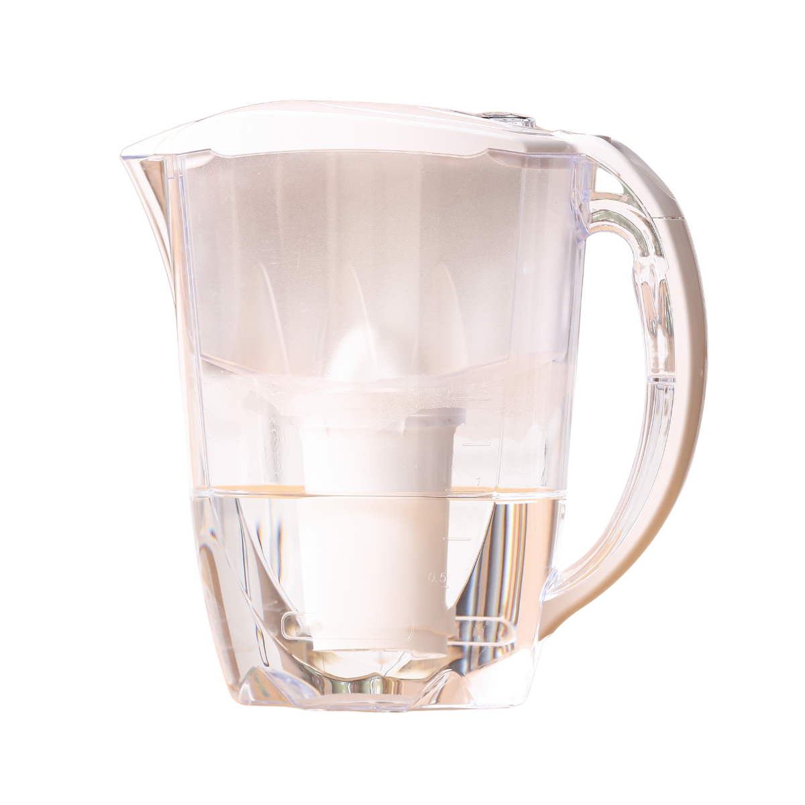
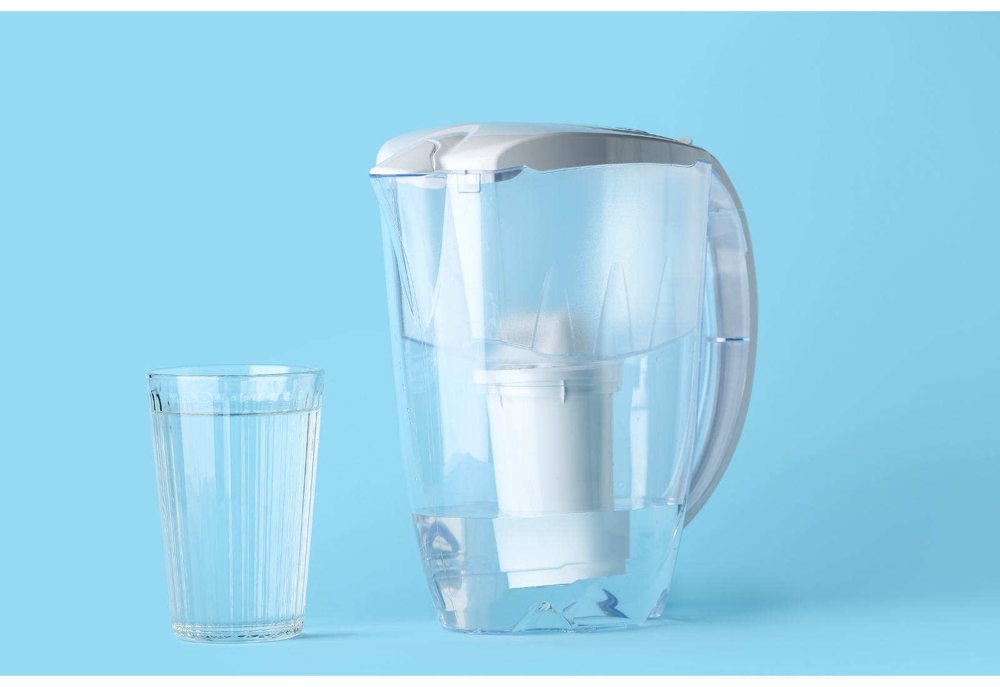

Water-Filter Jug
FreshPour Model F30
AquaLoom FreshPour F30 is a BPA-free, three-litre water-filter jug with a replaceable filter and a filter indicator. Replacing the filter involves removing the used cartridge, cleaning the jug, preparing and fitting a compatible replacement, flushing the new filter and resetting the indicator.
- Three-litre jug capacity
- Replaceable filtration cartridge
- Filter indicator and BPA-free jug
3 L Capacity

FreshPour Water-Filter JugModel F30
Routine filter care
Replace and prepare the filter before returning the jug to use
FreshPour F30 is a BPA-free water-filter jug with a three-litre capacity, replaceable cartridge and filter indicator that supports regular filter-replacement reminders.
Replace the cartridge when the indicator shows that replacement is due, when the filtration rate becomes unusually slow or according to the replacement schedule supplied with the compatible filter. Wash and dry your hands before handling the new cartridge.
Empty the jug and remove the lid, reservoir and used cartridge. Dispose of the old filter according to applicable local instructions. Wash the jug, lid and reservoir with mild dishwashing liquid and clean water, then rinse them thoroughly.
Prepare the replacement cartridge according to its instructions. This may include rinsing or soaking the filter to release trapped air and loose carbon particles. Do not use a visibly damaged, previously opened or incompatible cartridge.
Insert the prepared filter firmly into the reservoir opening so that water cannot bypass the cartridge. Reassemble the jug, fill it with cold potable tap water and discard the initial filtered water as directed by the replacement-filter instructions.
Reset the filter indicator after installation. Refill the jug and confirm that water passes through the cartridge normally before returning FreshPour F30 to regular use.
Product highlights
Three-litre capacity with replaceable filtration
FreshPour F30 combines a BPA-free jug, replaceable filter, filter-status indicator and three-litre capacity for everyday filtered-water preparation.
Replaceable filter
The filtration cartridge can be removed and replaced when its service period ends. Use only a compatible cartridge, prepare it according to its instructions and seat it firmly so water flows through rather than around the filter.
Three-litre capacity
The jug holds up to three litres. Do not fill above the marked capacity, and allow the reservoir to finish filtering before adding more water.
Filter indicator
The filter indicator provides a replacement reminder. Reset it after installing and flushing a new cartridge so that the next replacement cycle begins correctly.
BPA-free jug
The jug uses BPA-free construction. Clean it with mild dishwashing liquid and avoid abrasive cleaners, harsh chemicals and tools that may scratch the surfaces.
Cold-water filtration
Use cold potable tap water for filtration. Do not pour hot water or water of uncertain microbiological quality into the jug.

Filter replacement
Remove, clean, prepare, install and reset
Empty the jug before removing the used cartridge. Clean and rinse the jug components, then prepare a compatible new filter according to its supplied rinsing or soaking instructions.
Push the cartridge securely into the reservoir opening, reassemble the jug and flush the new filter. Reset the indicator only after the new cartridge has been installed correctly.
- Use a compatible filter
Check that the replacement cartridge is intended for FreshPour F30 and is sealed, clean and undamaged.
- Seat the cartridge firmly
Press the prepared filter evenly into the reservoir so that water does not bypass the filtration cartridge.
- Flush and reset
Discard the initial filtered water as directed and reset the indicator before resuming normal use.
Main replacement guidance
Prepare, install and flush the new filter before use
Empty and clean FreshPour F30, prepare a compatible replacement cartridge according to its instructions, press it securely into the reservoir, reassemble the jug, flush the filter with cold potable water and reset the filter indicator.
Jug capacity3 litresReplaceable filter system
Product details
Product Specifications
Key product, filter-replacement and care information for AquaLoom FreshPour F30.
| Product name | FreshPour |
|---|---|
| Model | F30 |
| Brand | AquaLoom |
| Product category | Water-filter jug |
| Jug capacity | 3 L |
| Filter type | Replaceable cartridge |
| Filter indicator | Integrated replacement reminder |
| Jug material | BPA-free construction |
| Replacement preparation | Prepare the filter according to its supplied instructions |
| Installation | Press the cartridge firmly into the reservoir |
| Flush procedure | Filter and discard initial water as directed |
| Indicator reset | Reset after the new filter is installed |
| Water type | Cold potable tap water |
| Cleaning | Mild dishwashing liquid and clean water |
| Hot water | Do not use for filtration |
| Maximum fill | Do not exceed the marked capacity |
| Product code | AL-F30-2026 |
| Manufacturer and distributor | AquaLoom |
Comprehensive guidance
How to replace the FreshPour F30 filter
Follow these steps to remove the used cartridge, clean the jug, prepare and install a replacement, flush it and reset the indicator.
- 1
Empty and clean
Empty the jug, remove the lid and reservoir and pull out the used cartridge. Wash the jug components with mild dishwashing liquid and clean water. Rinse thoroughly so no detergent remains.
- 2
Prepare the filter
Confirm that the new cartridge is compatible, sealed and undamaged. Rinse or soak it according to its instructions to release trapped air and loose particles before installation.
- 3
Install and flush
Press the prepared cartridge firmly into the reservoir, then reassemble the jug. Fill it with cold potable water and discard the initial filtered water according to the filter instructions.
- 4
Reset and resume
Reset the filter indicator, refill the jug and confirm that water flows normally through the cartridge. Keep the jug clean and do not exceed its three-litre capacity.
Important information
Filter Safety and Jug Care
Follow these precautions when cleaning, replacing the filter and using AquaLoom FreshPour F30.
Prepare clean components
- Wash and dry your hands before handling the filter.
- Empty the jug before removing the used cartridge.
- Use a sealed, undamaged and compatible filter.
- Clean the jug, lid and reservoir thoroughly.
- Follow the replacement-filter preparation instructions.
Install and flush correctly
- Seat the cartridge firmly in the reservoir.
- Use cold potable tap water.
- Discard the initial filtered water as directed.
- Do not exceed the three-litre capacity.
- Do not use hot water or harsh cleaning chemicals.
Reset and maintain the jug
Reset the indicator after fitting the replacement cartridge. Keep the jug clean and follow the water-storage and cleaning instructions supplied with the product and compatible filter.
Replace the filter when the indicator shows that replacement is due or if the cartridge becomes damaged or filtration performance changes unexpectedly.
Questions and Answers
Frequently Asked Questions
Find detailed answers about FreshPour F30 capacity, compatible filters, cartridge preparation, flushing, indicator reset and jug care.
QWhat is AquaLoom FreshPour F30?
A
FreshPour F30 is a BPA-free three-litre water-filter jug with a replaceable filtration cartridge and filter-replacement indicator.
QWhen should the filter be replaced?
A
Replace it when the indicator shows that replacement is due, according to the compatible filter schedule or if performance changes unexpectedly.
QHow is the old filter removed?
A
Empty the jug, remove the lid and reservoir and pull the used cartridge out of its opening before cleaning the jug components.
QHow is the new filter prepared?
A
Rinse or soak the compatible cartridge according to its supplied instructions, then install it firmly in the reservoir.
QWhy is the initial filtered water discarded?
A
Initial flushing prepares the new cartridge and removes loose particles or trapped air according to the filter instructions.
QWhen is the indicator reset?
A
Reset the filter indicator after the replacement cartridge has been prepared, installed and flushed correctly.
QWhat water should be placed in the jug?
A
Use cold potable tap water. Do not use hot water or water that is not known to be microbiologically safe.
QWho produces FreshPour F30?
A
FreshPour F30 is produced and distributed by AquaLoom and is identified by product code AL-F30-2026.